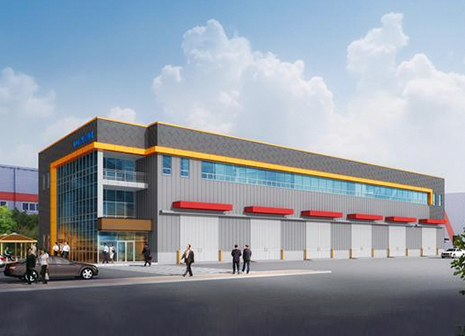
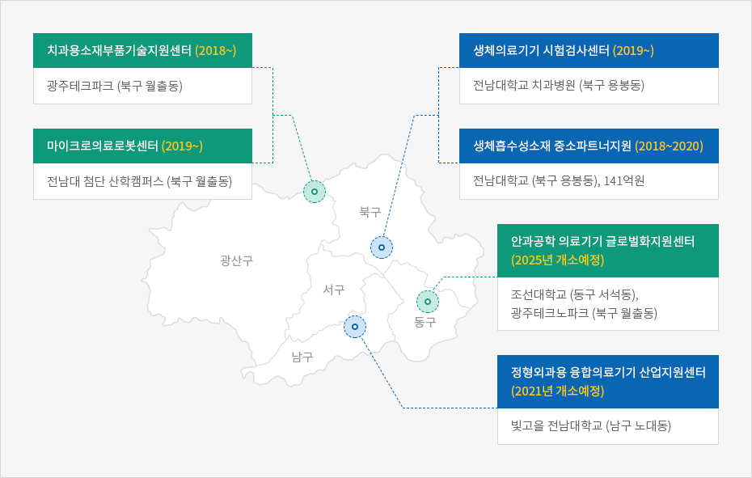

신성장동력산업
- Home
- 주요산업
- 신성장동력산업
광융합산업
MEMS(초소형정밀기계기술)기반 고부가 광반도체 상용화 인프라 구축
- 사업기간 : 2020~2022
- 총사업비 : 100억원
- 사업주관 : 한국생산기술연구원 서남지역본부
- 사업내용
- 초소형 CWDM/센서 개발용 필수 MEMS공정 장비 구출
- MEMS 기반의 센서/CWDM/광스위칭 소자 플랫폼기술 개발
- MEMS 공정을 이용한 고부가가치 소자 개발, 시생산 지원 및 인력양성
광융합산업 플랫폼 공동활용 사업화 지원
- 사업기간 : 2019~2022
- 총사업비 : 160억원
- 사업주관 : 한국광기술원, 한국전자통신연구원, 한국생산기술연구원
- 사업내용
- 광융합산업 대응에 필요한 제품의 기능 및 성능구현을 위한 시제품 제작 지원
- 광융합 제품 국제공인인증시험, 측정·분석 등 지원
스마트뿌리산업

금형제작가치사슬 혁신지원 센터 조감도
IOT빅데이터기반 금형제작가치사슬 혁신지원
- 사업기간 : 2018~2020
- 위치 : 광산구 평동산업단지 금형특화단지 내
- 사업규모 : 부지면적 3,302㎡, 연면적 2,640㎡
- 총사업비 : 204억원
- 사업내용
- IoT, 빅데이터, ICT를 금형 설계 제작, 시험 등 전공정에 적용
- 1개동(지상2층) 실증센터 및 2,500톤 프레스 등 장비 3종 구축
- 금형제작 혁신 장비 운영 및 시험·성능평가 시스템 개발 등
의료산업
의료 소재부품산업 클러스터 조성


치과용소재부품기술지원센터 (2018~) - 광주테크파크 (북구 월출동)
마이크로의료로봇센터 (2019~) - 전남대 첨단 산학캠퍼스 (북구 월출동)
생체의료기기 시험검사센터 (2019~) - 전남대학교 치과병원 (북구 용봉동)
생체흡수성소재 중소파트너지원 (2018~2020) - 전남대학교 (북구 용봉동), 141억원
안과공학 의료기기 글로벌화지원센터 (2025년 개소예정) - 조선대학교 (동구 서석동), 광주테크노파크 (북구 월출동)
정형외과용 융합의료기기 산업지원센터 (2021년 개소예정) - 빛고을 전남대학교 (남구 노대동)

광주·전남 의료관광 클러스터 구축
- 「광주시(의료) + 전남(관광)」협력 연대 추진
- 광주의료관광지원센터 운영(김대중컨벤션센터 2층)
- 관내 외국인환자 이용가능 의료기관 : 40개소
- 광주시 지정 선도의료기관 : 조선대병원, 전남대병원, 조선대치과병원, CL병원, 청연한방병원
- 중국어, 영어, 몽골어, 러시아어, 일본어, 베트남어, 캄보디아어 지원